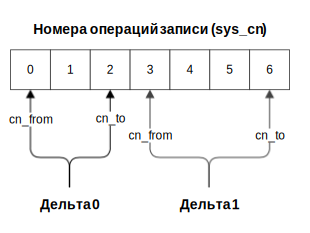
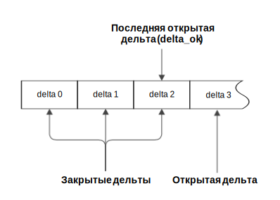

Дельта — целостная совокупность изменений в логической базе данных. Дельта включает все операции записи, выполненные между открытием и закрытием этой дельты, и имеет порядковый номер, уникальный в рамках логической базы данных.
Нумерация дельт начинается с 0. Дельты упорядочены в порядке возрастания их номеров и формируют историю состояний данных логической БД.
На рисунке ниже показана последовательность операций записи, выполненных в рамках дельт с номерами 0 и 1. В рамках дельты 0 выполнены операции записи с номерами 0-2, в рамках дельты 1 — операции записи с номерами 3-6.

Операции записи двух дельт
Дельту можно открыть, закрыть и отменить. Дельта, которая была открыта и еще не была закрыта, содержит горячие записи и называется открытой или горячей. Для каждой логической базы одновременно может быть открыто не более одной дельты. Дельта, которая была закрыта (зафиксирована) содержит актуальные записи и называется закрытой.
На рисунке ниже показана последовательность дельт, где дельта с номером 3 является открытой, а все предыдущие — закрытыми.

Открытая и закрытые дельты
Для загрузки данных в логическую БД нужно открыть дельту, загрузить данные в требуемые логические таблицы, после чего сохранить изменения (закрыть дельту). В рамках открытой дельты можно выполнить произвольное число операций записи.
Примечание: не допускается загрузка различных состояний одного и того же объекта в рамках одной дельты. Для загрузки обновленных данных объекта нужно закрыть открытую дельту, открыть новую дельту и загрузить необходимые изменения (см. пример на рисунке ниже).
На рисунке ниже показан пример обновления данных клиента, сменившего фамилию. Первоначальные данные клиента загружены в рамках дельты 0, а обновленные данные — в рамках дельты 1.
Обновление данных клиента, сменившего фамилию
Если нужно вернуть состояние данных, которое предшествовало изменениям, выполненным в рамках открытой дельты, следует откатить дельту. Откат дельты возможен только для открытой дельты, после закрытия дельты возврат к предыдущему состоянию недоступен.
При запросе и выгрузке данных номер дельты можно использовать, чтобы указать момент или период, по состоянию на который запрашивается информация (см. директиву FOR SYSTEM_TIME в разделе SELECT).